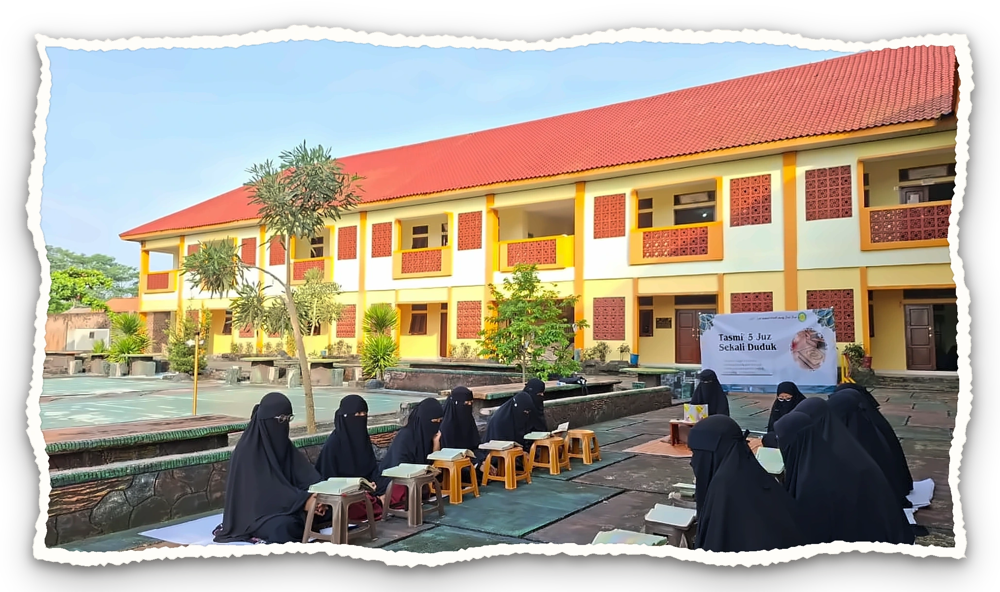
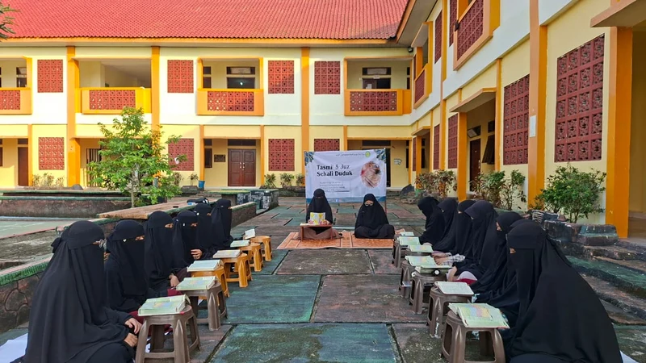
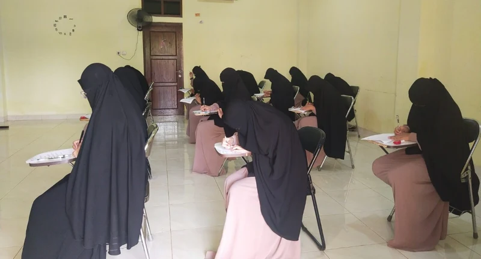
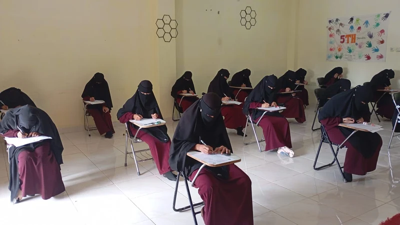
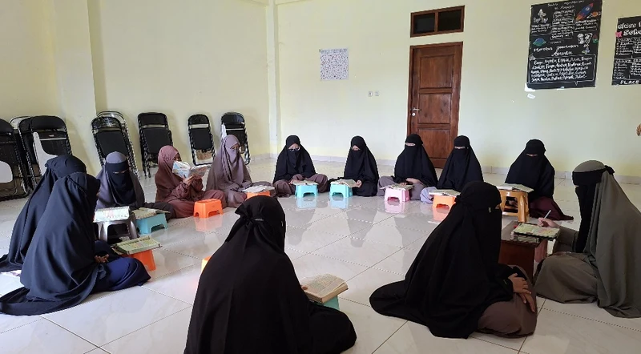
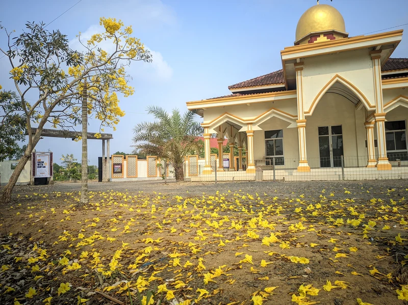
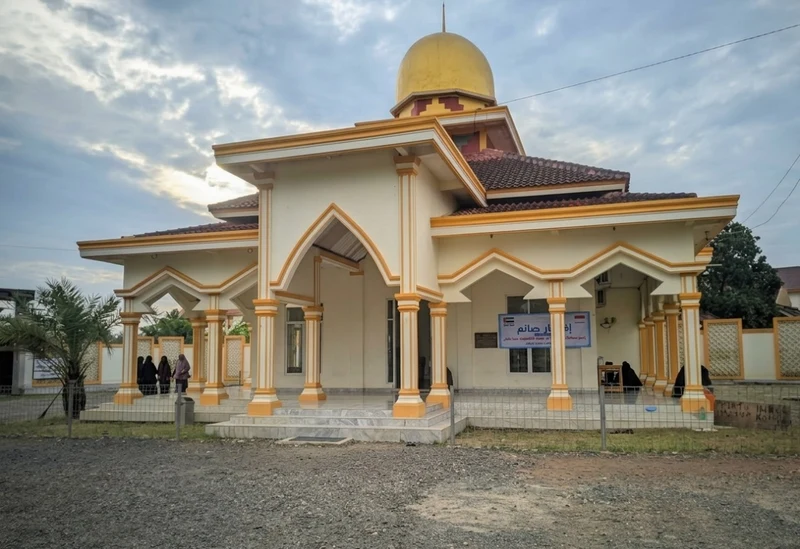
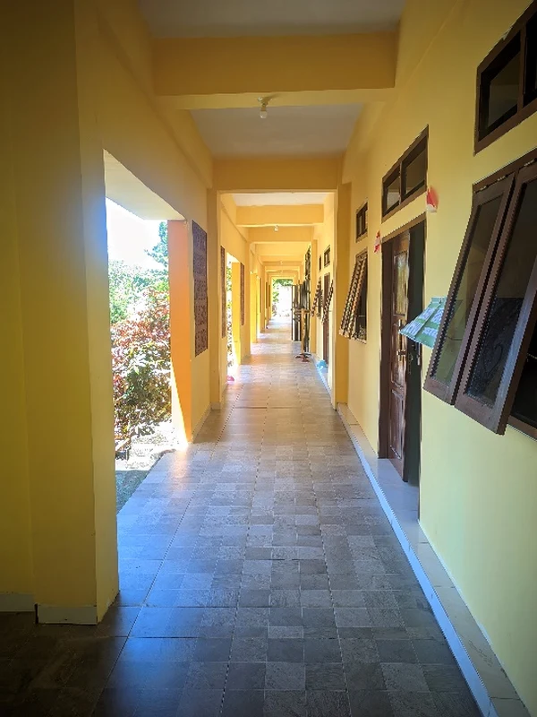
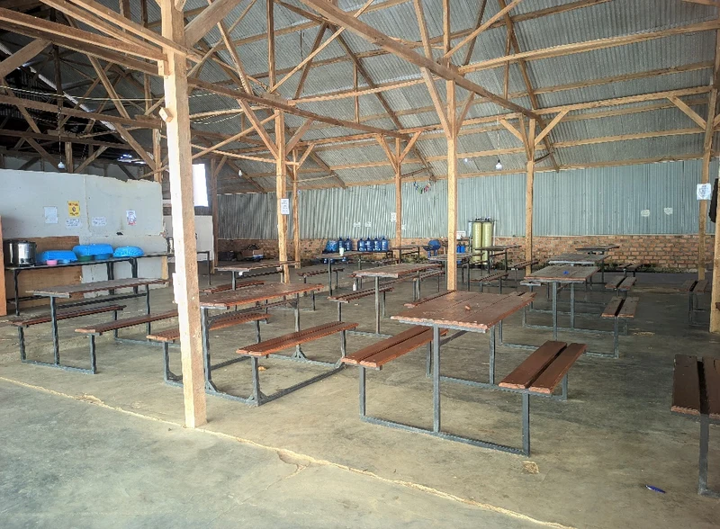

بِسْمِ اللَّهِ الرَّحْمَنِ الرَّحِيمِ
Bersama Kami, InsyaAllah Putri Anda Dekat Dengan Al-Qur'an
Pondok Tahfidz Khusus Putri · Tri Mukti Jaya, Banjar Agung, Tulang Bawang, Lampung

خَيْرُكُمْ مَنْ تَعَلَّمَ الْقُرْآنَ وَعَلَّمَهُ
"Sebaik-baik kalian adalah yang mempelajari Al-Qur'an dan mengajarkannya."
HR. Bukhari no. 5027
Mengapa Al-Qur'an?
Pondasi utama pembentukan jiwa dan karakter anak di zaman penuh tantangan.
Generasi Qur'ani Makin Dibutuhkan
Di era fitnah dan gempuran teknologi, benteng terkuat seorang anak adalah pemahaman dan hafalan ayat-ayat Allah.
Warisan Terbaik Orang Tua
Hafalan Al-Qur'an adalah mahkota kemuliaan abadi yang dipersembahkan seorang anak shalihah kepada orang tuanya di akhirat.
Jalan Ittiba' Kepada Nabi ﷺ
Bukan sekadar hafalan, ini adalah ikhtiar nyata membimbing generasi putri berjalan di atas sunnah Rasulullah ﷺ.
Tentang Pesantren
🎯 Profil Singkat
Pusat Pendidikan Tahfidzul Qur’an (PPTQ) Jamal Yusuf Al Haddad adalah Pondok tahfidz khusus Putri didirikan oleh Yayasan Jamal Yusuf Al Haddad pada tahun 2018, dengan Bapak Arnan Jaya, S.K.M., M.Kes sebagai Pembina dan sudah memiliki izin operasional pondok dari Kemenag pada tahun 2023. Terletak di Desa Tri Mukti Jaya, Kec. Banjar Agung, Kab. Tulang Bawang, Lampung.
🎯 MISI
- Terselenggaranya dengan optimal halaqah tahsin
- Terselenggaranya dengan optimal halaqah tahfidz Al-Qur'an
- Terselenggaranya pembelajaran bahasa Arab dan ilmu-ilmu diniyah
- Santriwati wajib asrama
- Tempat tinggal yang kondusif, bersih, indah, dan sehat
- Mencerdaskan anak bangsa dengan hafal Al-Qur'an mutqin, aqidah benar, dan berakhlak Qur'ani

4 Pilar Program
Pondasi kurikulum komprehensif untuk mencetak santriwati berilmu dan bertakwa.

Tahfidz Al-Qur'an
Menghafal Al-Qur'an dengan metode mutqin yang disiplin, terukur, dan dibimbing langsung oleh ustadzah berpengalaman.

Tahsin Al-Qur'an
Membaca sesuai kaidah tajwid, makharijul huruf, dan sifat huruf yang benar sebelum dan selama proses hafalan.

Ilmu Diniyah
Studi Fiqh, Hadits, Tafsir, dan Aqidah Ahlussunnah wal Jama'ah sesuai pemahaman Salafush Shalih.

Bahasa Arab
Pembelajaran bahasa Arab intensif untuk memahami makna ayat Al-Qur'an dan literatur kitab para ulama.
Lingkungan & Fasilitas
Suasana asri dan terjaga yang dirancang untuk kenyamanan menghafal Al-Qur'an.

Lingkungan Asri & Masjid
Area pondok yang hijau, sejuk, pepohonan rindang, dan masjid pondok sebagai pusat ibadah serta halaqah Qur'an.

Asrama Mukim Santriwati
Santriwati wajib tinggal di asrama mukim terpadu yang bersih, tertib, dan terjaga keamanannya selama 24 jam.

Kamar Tidur Bersih & Rapi
Fasilitas tempat tinggal yang sehat, bersih, dan nyaman demi menjaga kebugaran serta konsentrasi menghafal.

Bimbingan 24 Jam & Bebas Gadget
Pendampingan penuh ustadzah dalam suasana ukhuwwah, steril dari distraksi gadget/medsos agar hafalan terjaga.
Output Lulusan
Kualitas dan kepribadian putri Anda setelah menempuh pendidikan di PPTQ.
Hafidzah Mutqin
Memiliki hafalan 30 Juz yang melekat kuat dan terjaga.
Tajwid Benar
Fasih melafalkan ayat dengan kaidah tajwid yang shahih.
Akhlak Qur'ani
Berakhlak mulia, berbakti kepada orang tua, dan santun.
Ilmu Diniyah
Memahami dasar-dasar fiqh ibadah, aqidah, dan hadits.
Bahasa Arab
Mampu memahami literatur dan kosakata Arab dasar.
Ukhuwwah & Mandiri
Terbiasa hidup berjamaah, mandiri, dan berjiwa sosial.
Alur Pendaftaran
5 langkah mudah mendaftarkan putri Anda menjadi santriwati PPTQ.
Isi Formulir Online
Klik tombol pendaftaran dan lengkapi data santriwati serta orang tua di formulir resmi.
Bayar Biaya Formulir
Membayar biaya pendaftaran administrasi sebesar Rp 200.000 via transfer bank.
Siapkan Dokumen Lengkap
Melengkapi berkas fotokopi ijazah, KK, KTP orang tua, pas foto, dan surat kesehatan.
Ikuti Tes Seleksi
Tes kemampuan membaca Al-Qur'an, daya ingat hafalan, dan wawancara santri & wali.
Daftar Ulang
Melakukan registrasi ulang dan penyelesaian administrasi setelah dinyatakan diterima.
Persyaratan Pendaftaran
Daftar persyaratan yang wajib dipenuhi oleh calon santriwati.
Rincian Biaya Masuk
Transparan, terjangkau, dan bernilai jariyah untuk masa depan putri Anda.
Periode Pendaftaran
Jangan sampai terlewatkan! Kuota penerimaan santriwati terbatas.
Disarankan mendaftar pada Gelombang I untuk kepastian ketersediaan kuota asrama.
Gelombang II dibuka selama sisa kuota santriwati masih tersedia.
Brosur Pesantren
Ketuk brosur untuk melihat gambar lebih besar dan jelas.


Informasi & Kontak
Kami siap melayani pertanyaan seputar pendaftaran santriwati baru.